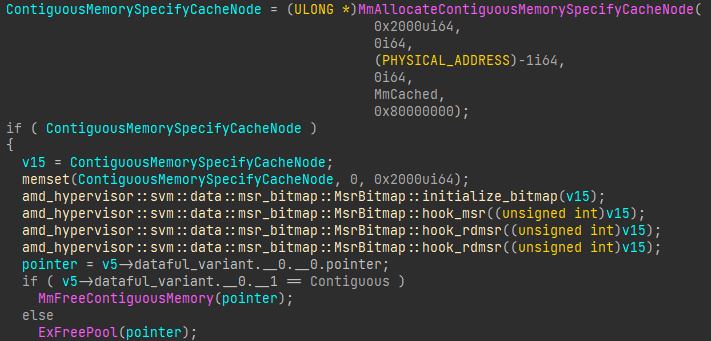

Projects

Weather Data Analysis Tool
- Developed a Java tool to fetch and analyze real-time weather data via public APIs.
- Utilized JSON parsing libraries to process data, with JavaFX for the user interface.
- Provided features like trend analysis and historical weather comparisons.

Custom Memory Allocator
- Designed and implemented a custom memory allocator in C to optimize memory usage for high-performance applications.
- Provided functions like malloc and free, tailored for minimal fragmentation and efficient memory allocation cycles.
Exercise Tracker App
- Java-based application for tracking and analyzing personal fitness activities, enhancing user engagement with customizable workout plans.
- Integrated JavaFX for a dynamic and responsive user interface, coupled with SQLite.
- Implemented advanced features like social sharing and progress visualization to motivate users and provide insightful feedback.